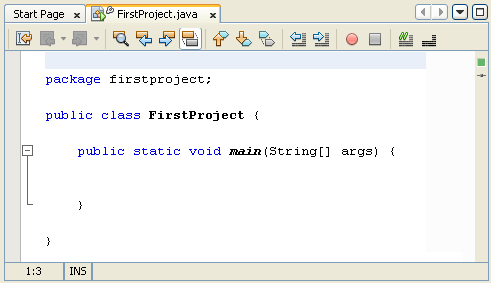

In the previous section, you tidied up your code a bit. Here's what your coding window should look like now:

You can see we have the package name first. Notice how the line ends with a semicolon. If you miss the semicolon out, the programme won't compile:
package firstproject;
The class name comes next:
public class FirstProject {
}
You can think of a class as a code segment. But you have to tell Java where code segments start and end. You do this with curly brackets. The start of a code segment is done with a left curly bracket { and is ended with a right curly bracket }. Anything inside of the left and right curly brackets belong to that code segment.
What's inside of the left and right curly brackets for the class is another code segment. This one:
public static void main( String[ ] args ) {
}
The word "main" is the important part here. Whenever a Java programme starts, it looks for a method called main. (A method is just a chunk of code. You'll learn more about these later.) It then executes any code within the curly brackets for main. You'll get error messages if you don't have a main method in your Java programmes. But as its name suggest, it is the main entry point for your programmes.
The blue parts before the word "main" can be ignored for now.
(If you're curious, however, public means that the method can be seen outside of this class; static means that you don't have to create a new object; and void means it doesn't return a value - it just gets on with it. The parts between the round brackets of main are something called command line arguments. Don't worry if you don't understand any of that, though.)
The important point to remember is that we have a class called FirstProject. This class contains a method called main. The two have their own sets of curly brackets. But the main chunk of code belongs to the class FirstProject.
In the next part, you'll learn how to run your Java programmes.